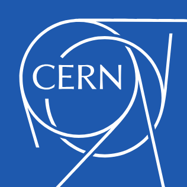

World Wide Web

The WorldWideWeb(W3) is a wide-area Hypermedia information retrieval initiative aiming to give universal access to a large universe of documents.
Everything there is online about W3 is linked directly or indirectly to this document, including an executive summary of the project, mailing lists, Policy, November's W3 News, Frequently Asked Questions.
- What's out there?
- Pointers to the world's online information, subjects,W3 Servers,etc
- Help
- On the Browser you are using
- Software Products
- A list of W3 project components and their current state.(e.g.line Mode,X11Viola,NeXTStep,Servers,Tools,Mail robot,Library.)
- Technical
- Details of protocols, formats, program internals etc
- Bibliography
- Paper documentation on W3 and references.
- People
- A list of some people involved in the project.
- History
- A summary of the history of the project.
- How can I help?
- If you would like to support the web..
- Getting code
- Getting the code by anonymous FTP, etc